Repair Procedures
Removal
1. Remove the following items;
A. Engine cover (A).
B. Air cleaner assembly(B) and air duct(C).
C. Battery and battery tray (D).
D. ECM(E)
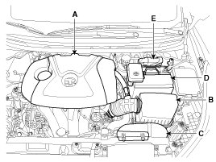
2. Disconnect the back up lamp switch connector (B) and the vehicle speed sensor connector (A).
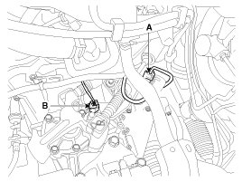
3. Remove the ground cable from transaxle (A).
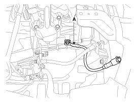
4. Disconnect the select and shift cable assembly (B) after removing the pin (A).

5. Remove the clutch tube bracket bolt (A).
Tightening torque:
14.7 - 21.6 N.m (1.5 - 2.2 kgf.m, 10.8 - 15.9 lb-ft)
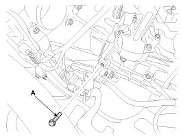
6. Remove the bracket bolt (A).
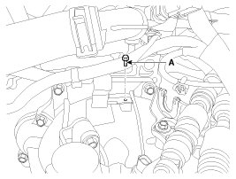
7. Remove the transaxle upper mounting bolt (B-2ea) and the start motor mounting bolt (A-2ea).
Tightening torque:
(A,B) 42.2 - 54.0 N.m (4.3 - 5.5 kgf.m, 31.1 - 39.8 lb-ft)
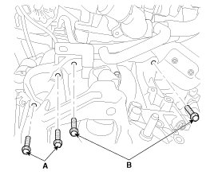
8. Using the SST (support SST No. : 09200-2S000, beam SST No. : 09200-38001, adapter SST No. : 09200-4X000), hold the engine and transaxle assembly safely.
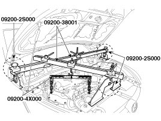
9. Remove the mounting cover (A).
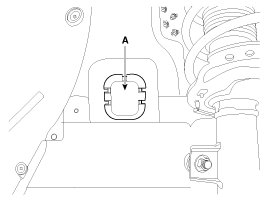
10. Remove the transaxle support mounting bracket bolts (A-2ea).
Tightening torque:
88.3 - 107.9 N.m (9.0 - 11.0 kgf.m, 65.1 - 79.6 lb-ft)
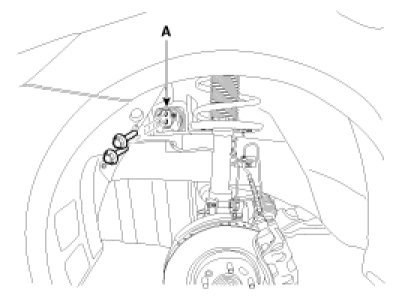
11. Remove the transaxle support mounting bracket (A).
Tightening torque:
58.9 - 78.5 N.m (6.0 - 8.0 kgf.m, 43.4 - 57.9 lb-ft)
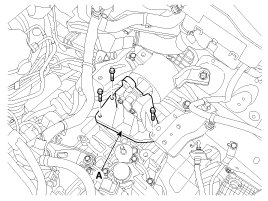
12. Remove the under cover (A).
Tightening torque:
6.9 - 10.8 N.m (0.7 - 1.1 kgf.m, 5.1 - 8.0 lb-ft)

13. Remove the drive shaft assembly.
14. Remove the clutch release cylinder assembly (B) after removing the nuts (A-2ea)
Tightening torque:
14.7 - 21.6 N.m (1.5 - 2.2 kgf.m, 10.8 - 15.9 lb-ft)
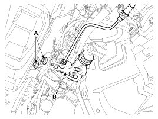
15. Remove the drive shaft cover (A).
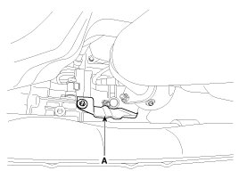
16. Remove the bracket (A).
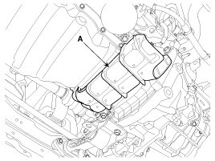
17. Remove the roll rod bracket (C) after removing bolt (A,B).
Tightening torque:
(A) 49.0 - 63.7 N.m (5.0 - 6.5 kgf.m, 36.2 - 47.0 lb-ft)
(B) 107.9 - 127.5 N.m (11.0 - 13.0 kgf.m, 79.6 - 94.1 lb-ft)
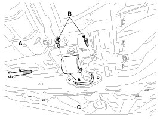
18. Remove the lower mounting bolts (A-4ea, B-1ea) of lower part of the transaxle, and the left side cover and remove the transaxle assembly by supporting it with a jack.
CAUTION:
- Be careful not to damage other system or parts near by when removing the engine and transaxle assembly.
Tightening torque:
(A) 43 - 49 N.m (4.3 - 4.9 kgf.m, 31.1 - 35.4 lb-ft)
(B) 43 - 55 N.m (4.3 - 5.5 kgf.m, 31.1 - 39.8 lb-ft)
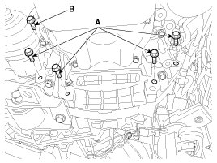
Installation
1. Installation is the reverse of removal.
NOTE:
- Adding Manual transaxle fluid.